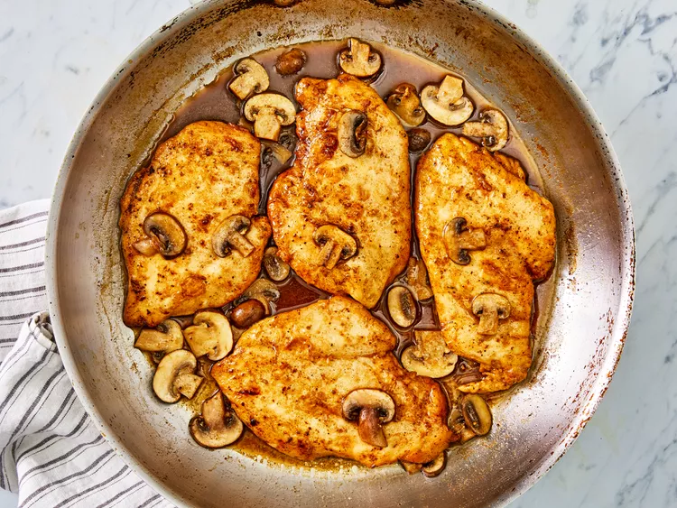

Chicken Marsala
Description
Chicken Marsala is a classic dish loaded with rich, meaty, and herbaceous flavor. A luscious mushroom wine sauce coats fried chicken breast for an unrivaled taste of Italian-inspired goodness. This mouthwatering recipe transforms common pantry ingredients into a show-stopping meal. Learn how to make the best Chicken Marsala right here.
Ingredients
- 1/4 cup all-purpose flour for coating
- 1/2 teaspoon salt
- 1/4 teaspoon ground black pepper
- 1/2 teaspoon dried oregano
- 4 medium skinless, boneless chicken breast halves, pounded 1/4 inch thick
- 4 tablespoons butter
- 4 tablespoons olive oil
- 1 cup sliced mushrooms
- 1/2 cup Marsala wine
- 1/4 cup cooking sherry
Directions
- Gather all ingredients.
- In a shallow dish or bowl, mix together the flour, salt, pepper, and oregano.
- Coat chicken pieces in flour mixture.
- In a large skillet, melt butter in olive oil over medium heat. Place chicken in the pan, and lightly brown.
- Turn over chicken pieces, and add mushrooms. Pour in wine and sherry.
- Cover skillet; simmer chicken 10 minutes, turning once, until no longer pink and juices run clear.
- Serve hot and enjoy!